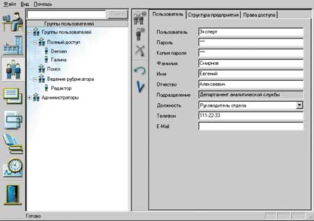
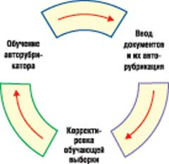
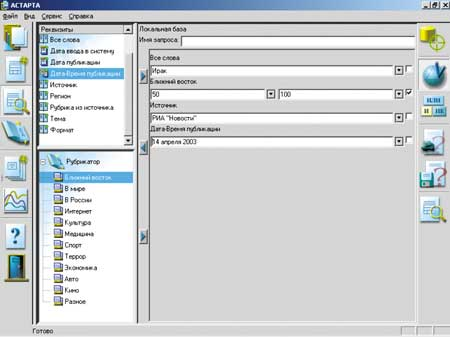
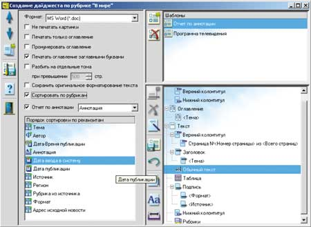
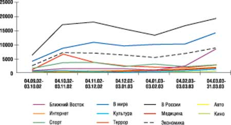

Галина Акимова, Матвей Пашкин
Технология обработки информации из различных источников, в том числе и из Интернет-СМИ, обеспечивает автоматизированный ввод (включающий тематический анализ текста, обработку, хранение и поиск) и получение статистических сводок и дайджестов.
На сегодняшний день основным методом аналитической обработки текстовых массивов данных остается поиск документов по ключевым словам. Интеллектуальность этой операции повышается за счет автоматического ранжирования найденных документов с использованием достаточно простых методов определения их значимости, учета морфологии языка и (гораздо реже) семантических словарей.
Однако для решения современных аналитических задач, особенно учитывая огромный объем исходной информации (в первую очередь из Интернета), этого явно недостаточно. В качестве примера того, что нужно сегодня заказчикам, можно привести разработанную в Колумбийском университете программу Newsblaster. Первоначально она предназначалась для упрощения поиска информации в Web, но на самом деле она в состоянии извлекать из Интернета любые важные новости. Эта система просматривает новостные сайты, сортируя найденную информацию по темам, определяет степень похожести текстов и формирует новость в виде комментария из пяти предложений. Примерно 88% из тех, кто использовал это решение, признают, что намного удобнее работать с этой программой, чем "ходить" по различным Web-сайтам в поисках новостей.
Следует заметить, что проблема работы с огромным количеством информации имеет два аспекта: один - это автоматический сбор информации (на что, собственно, и ориентированы упомянутая выше система и аналоги), а другой - автоматический разбор поступившей информации по данной тематике, проведенный на основе анализа текста документа.
Согласно А. Харламову [1], существующие подходы к анализу текстов можно разбить на два класса. К первому классу предлагается отнести быстрые алгоритмы, не зависящие от языка и предметной области, которые используют статистические методы. Второй класс образуют достаточно изощренные, дающие хороший результат, но сравнительно медленные подходы, зависящие от языка и предметной области и в большинстве своем основанные на лингвистических методах.
Не вызывает сомнения, что наиболее эффективен будет подход, сочетающий в себе быстроту и независимость от языка алгоритмов первого класса с высоким качеством обработки второго.
Из существующих систем, с точки зрения авторов, наиболее интересна система ТЕРМИН-5, использующая лексико-статистический метод рубрицирования текстов. Достоинство лексико-статистического метода - его высокая универсальность, поскольку смысл рубрики в нем определяется только набором обучающих текстов [2]. Система позволяет полностью автоматизировать процесс рубрицирования, обеспечивая настройку на рубрикатор по обучающей выборке текстов и выработку решающего правила отнесения документа к той или иной рубрике. Она ориентирована на рубрикацию реальных потоков текстовых сообщений СМИ [3].
Вообще говоря, сегмент аналитических систем, ориентированных на математический и статистический анализ различных количественных и качественных показателей, развивается на рынке ПО уже давно. Однако до полного решения задачи анализа огромного объема текстовой информации, содержащейся в печатных изданиях, новостных лентах информационных агентств, на тематических сайтах в Интернете, еще достаточно далеко.
Построение систем авторубрикации
Для решения задачи анализа текстовой информации и последующего автоматического распределения ее по требуемым тематикам необходимо в первую очередь сформировать рубрикатор, т. е. задать список тем или рубрик, наиболее точно характеризующих исследуемую область знаний. Необходимое условие при анализе текста - поддержка работы как с линейным, так и с иерархическим рубрикатором с неограниченным количеством уровней вложенности. Ниже приведен пример линейного рубрикатора, используемого на сайте Lenta.ru:
|
Кроме того, поскольку направления исследований могут изменяться, то хотелось бы иметь возможность классифицировать один и тот же массив введенной информации по разным тематикам, задаваемым разными рубрикаторами.
В существующих системах обработки текстовой информации распространены два принципиальных подхода: основанные либо на списке ключевых слов, либо на списке терминов (именные группы или словосочетания), отнесенных к рубрике тем или иным способом. Причем подготовительная работа по соотнесению ключевых слов и терминов какой-либо рубрике зачастую проводится экспертами вручную.
В этой статье мы рассмотрим метод, который представляет собой развитие системы ТЕРМИН-5 и позволяет автоматически сформировать список терминов, характеризующий принадлежность текстовой информации определенной рубрике. Такой подход можно назвать шагом на пути к автоматическому семантическому анализу текста. Построение списка характеристических терминов проводится на основе морфологического и синтаксического анализа текста путем выделения нетривиальных существительных и имен собственных в окружении определений с учетом частотности слов в языке.
Построение обучающей выборки
В основе технологии обучения рубрикатора лежит построение обучающей выборки - списка файлов или документов, поставленных в соответствие рубрикам этого рубрикатора. Обучение рубрикатора наиболее эффективно, если использовать короткие информативные тексты с максимальной смысловой нагрузкой. При работе с несколькими рубрикаторами для каждого из них следует сформировать свою обучающую выборку.
Точность построения обучающей выборки можно определить только на этапе проведения тематического анализа текстовой информации, т. е. при вводе ее в базу данных. Поэтому построение обучающей выборки - это итеративный процесс: в зависимости от качества определения тематики при анализе текста обучающую выборку можно корректировать.
Обучение рубрикатора
Процесс обучения рубрикатора заключается в построении некоторого множества терминов, характеризующих принадлежность каждой его рубрике. Список определяющих терминов формируется на основе анализа текста документов, составляющих обучающую выборку, по каждой рубрике отдельно. Каждому выделенному термину присваивается некоторый вес, характеризующий его значимость в тексте. Последующий анализ результатов позволяет уточнить список, понижая значимость пересекающихся понятий и терминов, а зачастую и удаляя их.
Иерархия рубрик вместе со значимыми для каждой рубрики терминами, т. е. обученный рубрикатор, называется авторубрикатором. За счет дополнительных средств, позволяющих эксперту выполнять операции добавления или удаления термина, изменения его веса, можно довольно гибко влиять на результаты работы по формированию определяющих терминов авторубрикатора. Откорректированные результаты обучения хранятся в собственной базе терминов (именных групп), характеризующих каждую рубрику, которая затем используется при автоматическом определении тематики поступающей информации.
Использование рубрикатора
После того, как рубрикатор построен, его можно использовать для анализа поступающих в систему текстовых документов. Для этого текст документа подвергается такой же обработке, как и тексты из обучающей выборки при построении рубрикатора. В результате автоматического морфологического и синтаксического анализа текста получают набор характеристических терминов (именных групп и словосочетаний) с учетом частотности. Этот набор терминов становится входным параметром рубрикатора для соотнесения его с соответствующими наборами каждой из рубрик. На выходе получают оценки релевантности данного текста каждой из рубрик. Постпроцессор может отсекать недостоверные (слабые) и/или выделять надежные (высокие) оценки в соответствии с заданными порогами достоверности.
Описанный выше процесс автоматического определения принадлежности входящей информации той или иной рубрике называется авторубрикацией.
Предварительная обработка информации
В качестве основных источников информации предлагается рассматривать Интернет-СМИ, новостные ленты, электронные документы, печатные издания. В основу обработки поступающих данных положен принцип максимально возможной автоматизации. Это касается как разбора текста документа, так и слежения за поступлением новых документов и их последующего ввода в хранилище информации.
Автоматический анализ текста и определение тематики поступающей информации, независимо от формата ее представления, предлагается выполнять непосредственно перед вводом ее в хранилище, но после проведения предварительной обработки исходных данных.
Необходимым функциональным элементом систем обработки информации должна быть проверка ее на дублирование. Особенно это актуально для Интернет-СМИ, где часто встречается полная перепечатка информации, порой и без ссылки на ее источник. Не менее редки ситуации, когда при перепечатке изменяется только заголовок статьи и дата публикации на сайте. Поэтому предлагается проверять на повторяемость как реквизитную, так и текстовую составляющую вводимого документа.
Интернет-СМИ. Обработка новостей, опубликованных в Интернете, состоит не только в описании структуры сайта и организации процесса загрузки с него новостей, но и в соблюдении правил, установленных на рабочем месте пользователя, в которых указываются расписание и периодичность просмотра сайта, состав реквизитов, сопровождающих новости, учет тематики, определенной на сайте, и т. п.
Новостные ленты. Специфика структуры новостной ленты - наличие многих документов внутри одного текстового файла. Обычно формат представления документов новостной ленты определяется внутри организации, ее подготовившей, что говорит об их многообразии. Обработка новостных лент заключается в автоматическом отслеживании новых поступлений, хранящихся на жестком диске, в определении и разборе формата новостной ленты, выделении отдельных документов, ее составляющих.
Электронные и бумажные документы. Технология работы с бумажными документами начинается обычно с перевода их в электронный вид, т. е. с операции сканирования.
Аналитическая обработка
Различные варианты автоматизации сбора разнородной информации и группировки ее по тематическим составляющим - это лишь первый шаг при работе с потоками информации, поступающей из различных источников. Следующим шагом должен стать анализ информации, наиболее часто подразумевающий составление статистических отчетов (возможно, с элементами прогнозирования) и построение дайджестов, позволяющих сгруппировать и опубликовать данные по выбранной тематике.
Статистические отчеты. Аналитические отчеты, базирующиеся на статистической обработке введенной информации, помогают не только быстро оценить качество имеющихся данных, но и зачастую сделать некоторый прогноз на будущее. Такие отчеты могут строиться как с использованием стандартных статистических пакетов (особенно это касается построения прогнозов), так и в результате экспорта данных в Microsoft Excel.
Построение дайджестов. При формировании дайджеста (сводного отчета) необходимо учитывать, что в нем требуется как наиболее полное представление информации по заданному вопросу (т. е. представление полного текста документа), так и представление только в краткой форме, когда в качестве текстовой информации выбирается аннотация или реферат.
Информационно-аналитическая система "Астарта"
Ниже мы рассмотрим работу описанных выше методов обработки информации на примере информационно-аналитической системы "Астарта" (разработчик - компания Cognitive Technologies, http://www.cognitive.ru). Это программное решение базируется на технологии "Евфрат" и предназначено для сбора, обработки и анализа неструктурированной информации, получаемой из Интернета, печатных материалов, СМИ и других источников. Оно имеет клиент-серверную архитектуру с возможностью публикации на сервере документов, предназначенных для общего пользования, и форматов новостных лент. В системе предусмотрено три разнотипных рабочих места и соответственно три типа пользователей: администратор, эксперт и пользователь.
Администрирование
Помимо стандартных функций управления правами доступа к системе и проведения регламентных работ, на администратора "Астарты" возложены функции публикации на сервере системных реквизитов, общих форматов для новостных лент и рубрикаторов. При создании и корректировке списка пользователей системы, а также установке их прав на работу с ее компонентами можно учитывать структуру предприятия, классификатор должностей, а также связи, характерные для взаимодействия между подразделениями. Все эти компоненты формируются и корректируются администратором из интерфейса системы (рис. 1).
|  |
| Рис. 1. Окно администратора системы.
|
Назначать права доступа можно как каждому пользователю системы отдельно, так и группе пользователей. В последнем случае для всех пользователей группы автоматически устанавливаются права данной группы. Если пользователь состоит в нескольких группах, то его права расширяются в соответствии с правами, которые он имеет в каждой группе.
Администратор - это выделенный пользователь системы, который не должен иметь прав на выполнение пользовательских функций.
Работа с рубрикатором
Формирование рубрикатора - один из самых важных шагов при подготовке системы к работе, поскольку именно он определяет тематику, по которой будет разбираться входящая информация. Система поддерживает работу с иерархическим рубрикатором неограниченной глубины. Рубрикатор можно создать непосредственно из интерфейса системы или подготовить заранее в произвольном текстовом редакторе и импортировать в систему. При подготовке текста рубрикатора разрешено использовать произвольные разделители уровней иерархии.
За подбор обучающей выборки отвечает либо эксперт системы, либо специалист, выполняющий его функции. Обучающая выборка может состоять как из набора файлов, распределенных по рубрикам, так и из документов, ранее введенных в "Астарту". При этом можно выбрать уровень оценки релевантности принадлежности данной рубрике, установленной при вводе документа в систему. Возможность участия документов системы в формировании обучающей выборки особенно удобна при построении уточняющей выборки.
Качество работы построенного авторубрикатора системы определяется по результатам автоматического определения тематики поступающей информации. Авторубрикация документов проводится на этапе ввода информации в БД. Документам присваивается оценка релевантности, характеризующая принадлежность той или иной рубрике (или нескольким рубрикам). Документы, тематика которых не была установлена, относятся к последней по порядку рубрике рубрикатора (например, "Разное"). При неудовлетворительном качестве определения тематики авторубрикатор следует переобучить, уточнив состав обучающей выборки, и заново рубрицировать тот же набор документов (рис. 2).
|  | Рис. 2. Процесс построения рубрикатора.
|
Результат работы программы обучения (набор характеристических терминов) доступен для просмотра и корректировки. Эксперту предоставляется возможность откорректировать вес того или иного термина, добавить новый термин или удалить ненужный.
Подготовленный и обученный рубрикатор публикуется на сервере системы или сразу становится доступен для дальнейшей работы (если используется локальная версия системы).
Работа пользователя
Работа пользователя системы начинается с определения списка источников информации, задания расписания работы программы, обрабатывающей Интернет-СМИ, и указания списка директорий, в которых будут скапливаться поступающие новостные ленты. Кроме того, необходимо выбрать рубрикатор. В системе разрешена работа с несколькими рубрикаторами, т. е. любой документ может быть прорубрицирован по нескольким рубрикаторам, однако текущим в каждый момент времени должен быть один рубрикатор.
По умолчанию система настроена так, что один документ одновременно рубрицируется по нескольким рубрикам. Однако существует возможность - и это удобно при составлении статистических отчетов - настроить авторубрицирование по принадлежности документа только одной рубрике.
Ввод документов
Система ввода поддерживает автоматический просмотр новостных страниц заранее указанных сайтов с заданной периодичностью и в соответствии с составленным расписанием. Применение системы расписаний позволяет распределить работу по вводу новостей, относя ее, например, на ночное или обеденное время.
Предварительная обработка новостной Интернет-страницы заключается в выделении отдельных новостей из новостного блока и разбора структуры каждой новости, т. е. в выделении текстового фрагмента и списка реквизитов, его сопровождающих. Подготовленные таким образом новости передаются системе ввода, в процессе работы которой проводится проверка на дублирование информации, а затем авторубрикация ее текста. Повторные документы в систему не вводятся. Вся информация о работе с Интернет-СМИ отражается в специальном протоколе.
При обработке новостных лент различных форматов в первую очередь определяется формат данной ленты. Заметим, что в одном потоке могут находиться новостные ленты различных форматов. Затем из новостной ленты выделяются отдельные новости, которые передаются системе ввода. Новостные ленты, формат которых системе не удалось определить автоматически, собираются в заранее указанном месте. В дальнейшем можно вручную указать формат, по которому их следует вводить. Кроме того, предусмотрена возможность ввода в "Астарту" так называемых неформатных документов, т. е. документов, формат которых в системе не описан. Указание, что сейчас будет вводиться поток неформатных документов, делается вручную.
Для обработки бумажных документов в системе есть возможность запустить программу сканирования и указать в ее интерфейсе место расположения полученных графических образов документов. Последующий ввод таких документов в систему выполняется вручную, с использованием дополнительной возможности распознавания текста документа "на лету" (drag&recog) при заполнении реквизитов документа. Возможна также автоматическая полнотекстовая индексация графического документа путем "слепого" распознавания всего графического образа и передачи распознанного текста модулю полнотекстовой индексации.
Поиск документов
Разветвленная поисковая система программного комплекса "Астарта" (рис. 3) обеспечивает составление сложных запросов, поддерживая организацию полнотекстового, контекстного и реквизитного поиска документов, причем как по локальному, так и по серверному хранилищу данных. При организации поиска используются методы морфологического анализа, позволяющие находить в тексте документа не только точно указанное слово (или словосочетание), но и все его словоформы. Поиск с учетом морфологии можно проводить как по тексту документа, так и по его реквизитам.
|  |
| Рис. 3. Формирование запроса на поиск документов.
|
Интерфейс системы позволяет формировать запросы с использованием логических операций И, ИЛИ, НЕ, указывая тем самым более точное условие для поиска информации. Имеется также ряд средств и функций, упрощающих работу по формированию запроса на поиск документов:
- наличие словарей при реквизитах системы (упрощает выбор необходимого значения);
- возможность указания даты на "естественном" языке (например, выбор даты "март 2003 г." равносилен указанию интервала с 1.03.03 по 31.03.03);
- формирование запроса по результатам поиска;
- хранение предопределенных запросов.
Формирование дайджестов
Формирование сводных отчетов (дайджестов), сгруппированных по различным информационным срезам, - неотъемлемая часть функциональных возможностей системы (рис. 4). Для реализации этой возможности в системе "Астарта" имеется компонент, позволяющий создавать различные шаблоны представления информации в отчетах, где задаются стили и структура всех составных частей отчета и указывается способ сортировки документов. Имеющиеся настройки позволяют составить дайджест только по аннотации документов или сформировать полнотекстовый дайджест. При больших объемах информации можно сформировать многотомный документ или же, наоборот, только оглавление для него.
|  |
| Рис. 4. Формирование сводного отчета (дайджеста).
|
По умолчанию итоговый документ создается в формате Microsoft Word, однако можно выбрать и другой формат представления данных на этапе заполнения шаблона.
Построение статистических сводок
Основная задача статистического анализа состоит в том, чтобы определить тенденции развития исследуемой проблемы. Наиболее наглядные способы представления результатов - временной ряд, показывающий развитие исследуемой величины с течением времени, и диаграмма, показывающая долю исследуемой величины относительно других величин. Если для решения задач прогнозирования требуется применение различных статистических пакетов, использующих специальные алгоритмы (например, алгоритм авторегрессии и интегрального скользящего среднего АРИСС - ARIMA), то качественную оценку, полученную на основании построенных временных рядов, можно получить с помощью стандартного пакета Excel.
В системе "Астарта" реализованы оба способа построения различных статистических сводок: с использованием возможностей пакета Statistica 5.5 либо стандартного пакета Excel. При экспорте в Excel из интерфейса системы можно указать тип представления информации: график, круговая диаграмма или таблица. Пример временного ряда, построенного с использованием пакета Excel для рубрикатора сайта Lenta.ru, приведен на рис. 5.
|  |
| Рис. 5. Представление результатов обработки в виде временного ряда.
|
Заключение
Информационным и аналитическим службам предприятий в своей работе приходится сталкиваться с самыми разнообразными источниками информации. Это бумажные периодические издания, электронные газеты, другие Интернет-ресурсы, электронная почта, передача новостных потоков по IP- и ftp-каналам и т. п. Использование описанной в статье технологии обработки и анализа информации, поступающей из разнородных источников, с автоматической группировкой по тематическим признакам сводит к минимуму вероятность пропустить необходимые сведения. Автоматическая фильтрация потоков позволяет оперативно получать интегральную информационную картину, а для детального изучения поступающей информации может использоваться мощный поисковый механизм с построением сложных запросов.
Опыт внедрения информационно-аналитической системы в различных организациях показал высокую эффективность и простоту адаптации системы к местным условиям благодаря разработанному универсальному инструменту автоматизированной загрузки больших, разнородных по структуре потоков текстовой информации.
Универсальный разборщик форматов дает возможность полностью автоматизировать ввод электронных информационных потоков из гетерогенных источников с приведением информации к единому внутреннему представлению, а также свести к минимуму рутинную работу по вводу нерегулярных текстовых данных (например, ввод текстов с бумажных носителей при распознавании статей из печатных СМИ, конспектирование, а в перспективе и автоматическое распознавание текущей аудиоинформации и т. п.). Встроенная система автоматического слежения за публикацией "свежих" новостей на информационных сайтах в Интернете позволяет автоматизировать и эту часть деятельности информационных и аналитических служб предприятий.
Важное обстоятельство - гибкость предложенной технологии авторубрикации (тематической фильтрации). Построение списка рубрик и обучение системы может выполнять эксперт - специалист информационно-аналитической службы конкретного предприятия - для нужд специализированного информационно-аналитического обслуживания. Диапазоны достоверных оценок релевантности документов заданным рубрикам также должны быть доступны эксперту в качестве инструмента анализа или самообучения системы на свежих данных.
Аналитический блок служит для автоматизации процесса подготовки отчетов и дайджестов, а также позволяет аналитику отслеживать и давать прогноз отражения в публичном информационном пространстве (СМИ, Интернет,..) различных тенденций развития конкретной предметной области.
Эффективность информационно-аналитических систем такого класса может быть повышена благодаря развитию и внедрению методов искусственного интеллекта в применении к анализу текстов, в частности, методов автоматического семантического анализа текстов, понимания смысла.
Литература
|